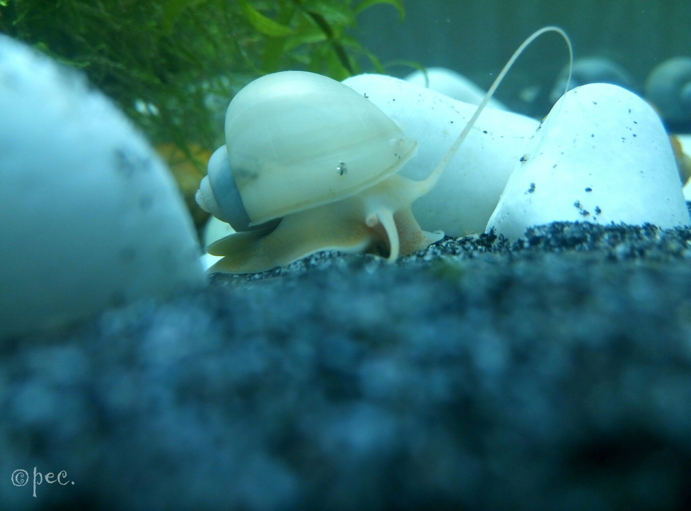
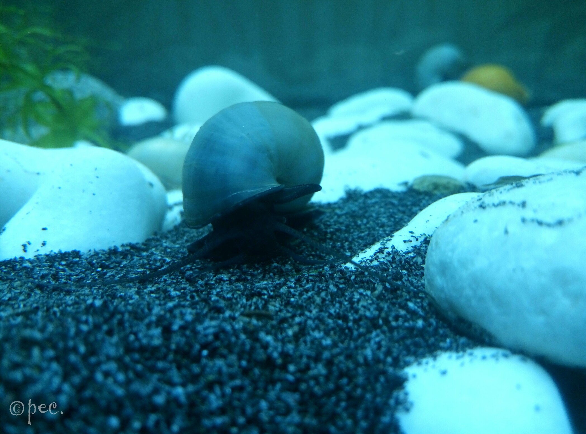
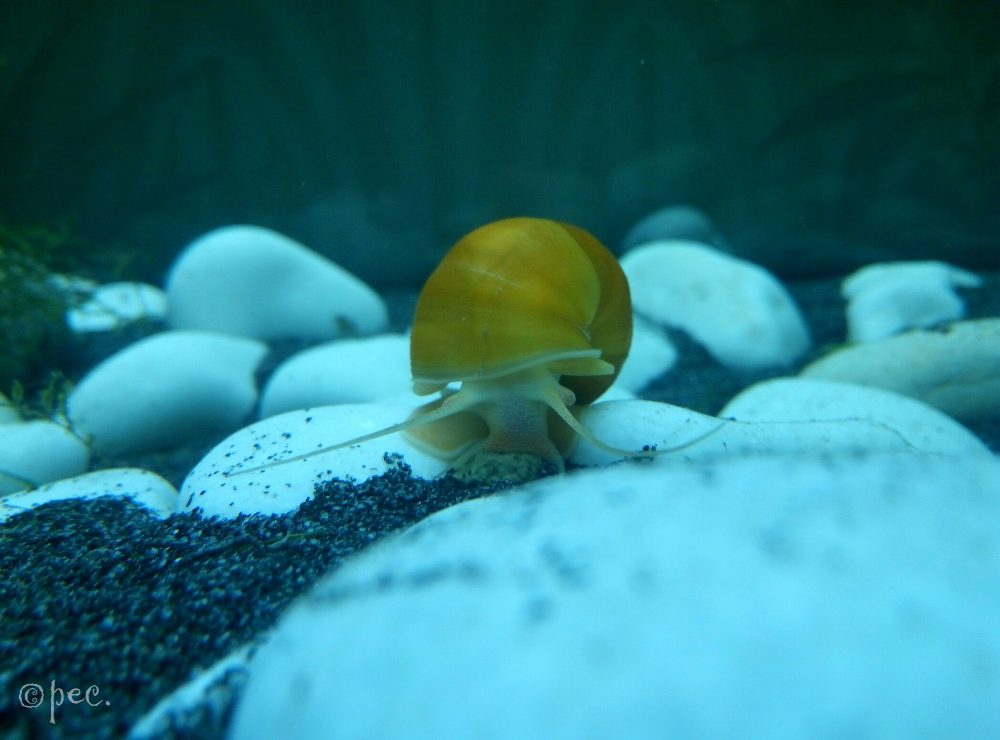
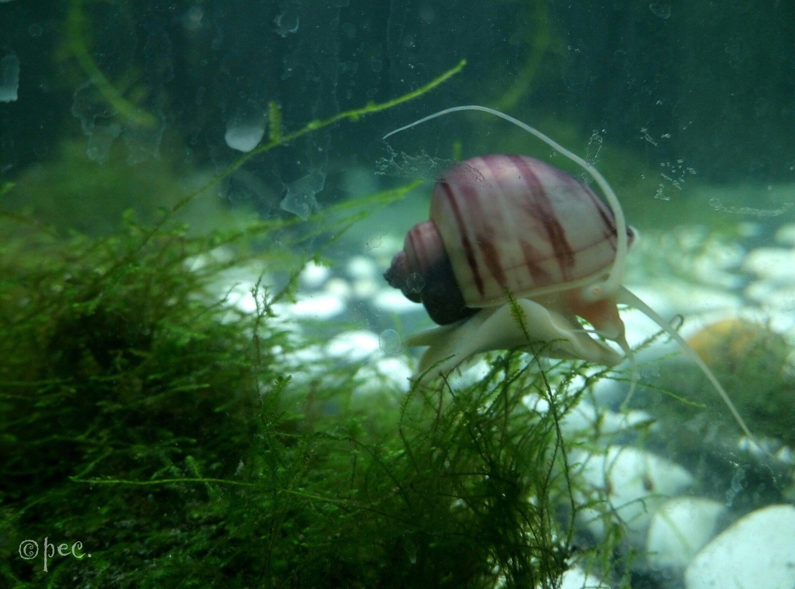

Другие виды
- Pomacea / Ампулярия
Ампулярия - одна из самых крупных и самых знакомых всем аквариумистам улитка. Она довольно энергичная и при этом имеет эффектный окрас. Их грациозности передвижений, их длиннющим тактильным усикам - может позавидовать любой аквариумный житель, что уж там говорить о нас? Залипнуть можно надолго
Основные параметры содержания.
Температура: 18-26°C.
Стоит сразу отметить, что при более низкой температуре - моллюск замедляет свой рост, при этом, живя дольше, чем если температура в аквариуме будет 23-24 и выше.
Таким образом, при высокой температуре, улитка растёт быстрее, но вместо 3 лет, будет жить 12-16 месяцев. Выбор за вами.
Литраж на одну особь: 10-12л +10 на каждую последующую.
Если вы думаете, что улитки - наводят чистоту и только, спешу вас огорчить - они довольно прожорливые, а поэтому и довольно неплохо загрязняют аквариум своими отходами.
Так что если у вас аквариум на 20-30 литров, не стоит закидывать туда 5-10 улиток, потому, что от них будет больше вреда, чем пользы.
Описание вида.
Ареал:
Данный моллюск населяет пресные медленнотекущие и стоячие воды рек, прудов, болот, расположенных на территории Азии, Южной Америки и Европы.
Размеры ракушки:
Примечательно, что размер ракушки зависит напрямую от литража аквариума. Чем меньше аквариум, тем меньшего размера будет улитка. Но даже в таком случае, их размеры в неволе, что достигают от силы 7 сантиметров в диаметре, не сравнятся с размерами на воле, которые достигают в диаметре чуть ли не вдвое больше, а это, хочу я вам заметить - улитка, с диаметром ракушки в 15 сантиметров.
Половое созревание / кладки:
Половозрелыми Ампулярии становятся к году. Примечательным является тот фактор, что они - раздельнополые, и с полом придётся угадывать, т.к. различить их практически невозможно.
В кладке может быть от 100 до 500 и больше яиц.
Откладывает улитка их не в воде, а над водой, так что если вы замечаете, что улитка упорно пытается выползти из аквариума, стоит подумать об этом.
Говоря об окрасах Ампулярий, нужно отметить, что их достаточно много. И даже не думаю, что стоит упоминать о том, что они, не взирая на цвета друг-друга, спокойно спариваются и делают цветное потомство. Могу лишь сказать, что самый распространённый цвет из остальных - желтый.
Автор фото/владелец моллюсков: Starcaller Forever |
 |
 |
 |